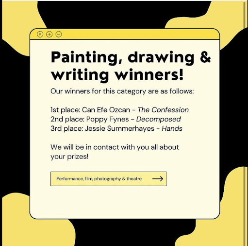
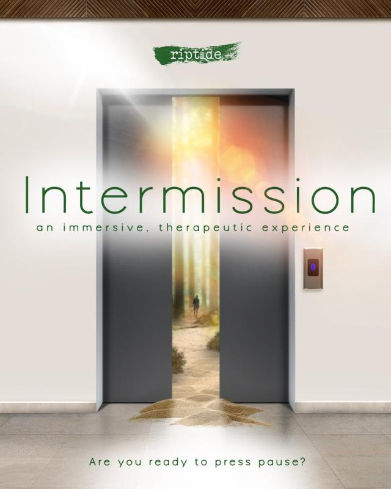
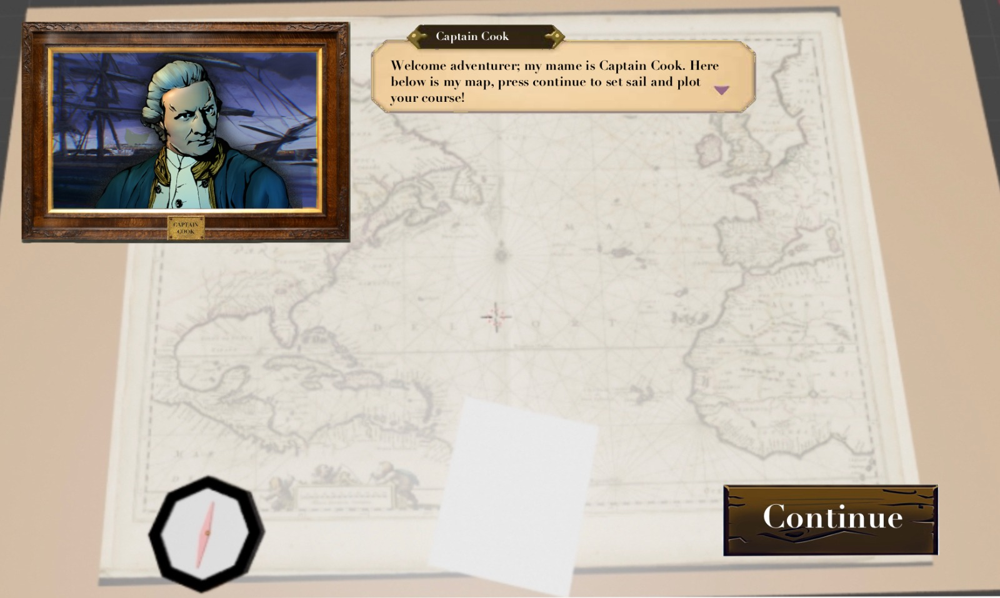

Undergraduate Thesis
This paper focuses on the development of neural network architectures for multi-modal sign language translation services.
> Past and current projects
This section will provide information on past and current projects; both personal and employment as well as academic research.
This paper focuses on the development of neural network architectures for multi-modal sign language translation services.
This proposal builds upon the work of my undergraduate thesis, aiming to create impactful interactive systems using machine learning for gesture recognition.
This project was aimed at creating accessible programming resources for visually impaired students, presented at the DigAcc24 conference.
This project focused on developing a mobile app providing translation services for non-native speakers in the UK, with an AI-powered chatbot and website.
As an XR Developer with XRStories in collaboration with Riptide Studios, I developed an augmented reality therapy experience using Unity and C#.
This project was undertaken with XRStories for the Captain Cook Museum in Whitby.


